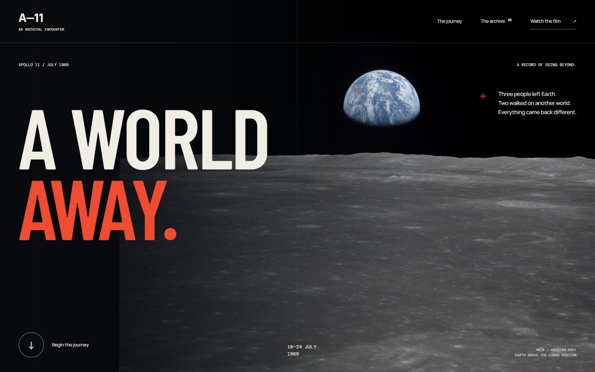
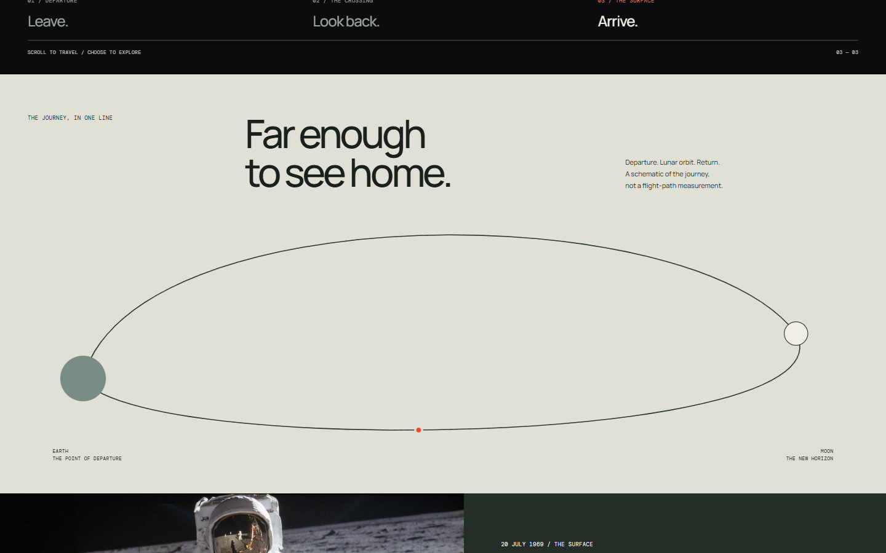
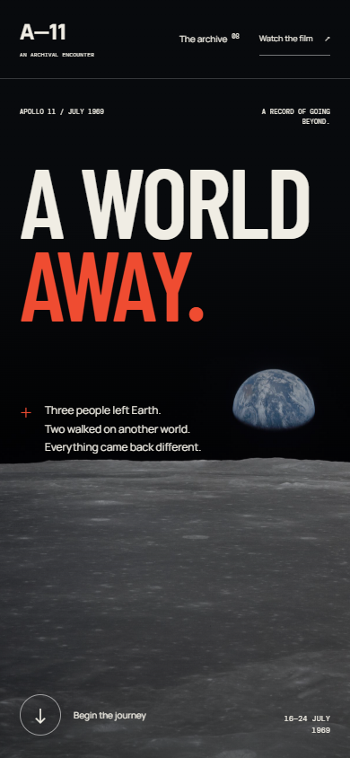
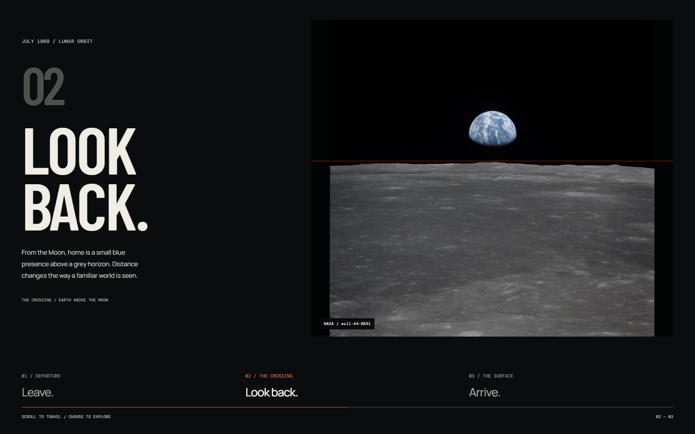
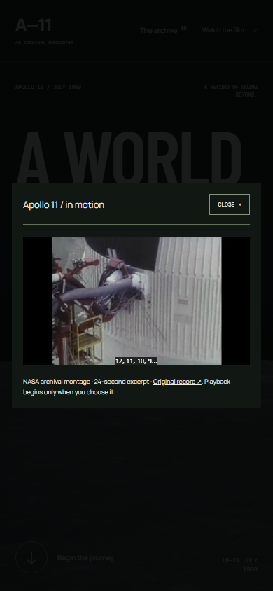

A point of view. A working interface.Evidence you can inspect.
An Apollo 11 editorial experience.Real NASA media. Authored motion.Desktop, phone and working states.





Design with intent.Build with evidence.